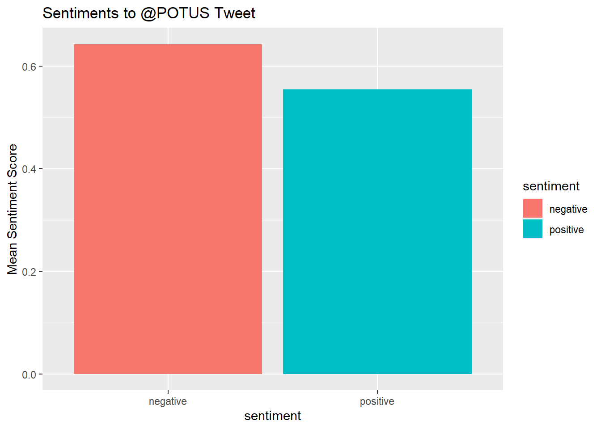

This research revolves around text analytics and healthcare costs. Specifically, I wanted to focus on analyzing replies to a specific tweet on a specific social science topic.
According to the government, the Inflation Reduction Act of 2022 (IRA 2022) will cut prescription drug costs and lower overall healthcare costs. Unfortunately, the US healthcare system is very complex and the political divide among Americans view the IRA differently.
On October 15, 2022 at 9:10am, POTUS tweeted “With the Inflation Reduction Act, the American people won and Big Pharma lost.” At the time of this writing, this tweet has generated 7,301 replies, 5,016 retweet and 25.5K likes.
At first glance, my impression of this specific @POTUS tweet is positive. My research looks into the sentiments of all the Tweet replies (including replies to replies) to this specific $POTUS tweet.
1. Do the responses imply trust on @POTUS?
2. Is public opinion positive?
3. Are there specific words that trigger positive or negative sentiments?
Data
Corpus is composed of 9497 twitter replies (all conversation threads) from @POTUS tweet on October 15, 2022 saying “With the Inflation Reduction Act, the American people won and Big Pharma lost.” Twarc package in python was used to extract the conversation threads of this specific tweet.
Data Pre-Processing
1. Data extracted as jsonl, converted to csv
2. Tweet replies isolated and cleaned.
3. Cleaning:
remove stopwords,
lowercase
remove twitter handles
remove "POTUS" "joe" "biden" "inflation" "big" "pharma"
remove punctuation
remove retweet
remove numbers
remove white spaces
& converted to 'amp', remove "amp"
4. Stemming
Analysis -Word cloud, Sentiment Analysis
Word cloud was used to get visualization on most used words. Sentiment analysis using NRC as I wanted 8 specific emotions namely anger, fear, anticipation, trust, surprise, sadness, joy, disgust and positve or negative sentiment.
Results
Initial results was surprising. Most replies evoked trust to @POTUS tweet about the IRA and its effects on the people and Big Pharma. However, it was very surprising that sadness and anger were the next 2 prominent emotions from this tweet.
It was also unexpected that the tweet had an overall negative sentiment based on average sentiment scores.
Challenges
I had a difficult time sourcing data. Initial attempts to parse PUBMED and EMBASE. The Open-Access subsets were limited in terms of my research topic of sentiments on healthcare costs in the US. Due to time constraints, I did not find it practical hand-pick and parse 50+ pdfs, some requiring paid subscriptions. With this, I decided to go straight to the source- tweet responses. Extracting twitter replies was a steep, but fun, learning curve for me. Initially , I used the academictwitteR package in R but my dataframe kept coming up empty. I switched to python and found the twarc package much easier.
Future work
With this initial analysis, I would like to examine the replies closely and conduct a toxic comment classification. I would like to use classifiers to predict if a twitter response is toxic. I will continue to pre-process the data to remove emojis and non-english words.
Code
# Read in dataIRA.csv <-read_csv("IRA_med.csv")
Code
IRA_df <-as.data.frame(IRA.csv) #convert csv to df
IRA_td<-data.frame(t(IRA_Sentiment)) #transposeIRA_td_new <-data.frame(rowSums(IRA_td[2:9497]))IRA_td_mean <-data.frame(rowMeans(IRA_td[2:9497]))#get mean of sentiment values
Code
#Transformation and cleaningnames(IRA_td_new)[1] <-"Count"
#Plot One - Count of words associated with each sentimentquickplot(sentiment, data=IRA_td_new2, weight=Count, geom="bar", fill=sentiment, ylab="count")+ggtitle("Emotions to @POTUS Tweet")
#Plot One - Count of words associated with each sentimentquickplot(sentiment, data=IRA_td_mean2, weight=Mean, geom="bar", fill=sentiment, ylab="Mean Sentiment Score")+ggtitle("Sentiments to @POTUS Tweet")

REFERENCES
1. House, T., 2022. BY THE NUMBERS: The Inflation Reduction Act - The White House. [online] The White House. Available at: <https://www.whitehouse.gov/briefing-room/statements-releases/2022/08/15/by-the-numbers-the-inflation-reduction-act/> [Accessed 15 October 2022].
2. Biden, P. (2022, October 15). We pay more for our prescription drugs than any other nation in the world. it's outrageous. but now, instead of money going into the pockets of drug companies, it will go into your pockets in the form of lower drug prices. Twitter. Retrieved October 15, 2022, from https://twitter.com/POTUS/status/1581374573815431168
3. Robinson, J. S. and D. (n.d.). Welcome to text mining with r: Text mining with R. Welcome to Text Mining with R | Text Mining with R. Retrieved October 15, 2022, from https://www.tidytextmining.com/
Source Code
---title: "Blog 2-Sentiment Analysis on IRA and Healthcare Costs"author: "Rhowena Vespa"desription: "Sentiment Analysis on POTUS Twitter Replies"date: "10/02/2022"editor: visualformat: html: toc: true code-fold: true code-copy: true code-tools: truecategories: - Healthcare - Twitter - IRA - Rhowena Vespa - Blog Post 2 - Sentiment Analysis---```{r}#| label: setup#| warning: falselibrary(tidyverse)library(quarto)library(quanteda)library(quanteda.textplots)library(lubridate)library(tm) library(tidytext) library(dplyr)library(corpus) library(ggplot2)library(reshape2)library(syuzhet) library(stringr)library(tidyr)library(DT)library(RColorBrewer)knitr::opts_chunk$set(echo =TRUE, warning =FALSE, message =FALSE)```## Research topicThis research revolves around text analytics and healthcare costs. Specifically, I wanted to focus on analyzing **replies to a specific tweet** on a specific social science topic.According to the government, the Inflation Reduction Act of 2022 (IRA 2022) will cut prescription drug costs and lower overall healthcare costs. Unfortunately, the US healthcare system is very complex and the political divide among Americans view the IRA differently.On October 15, 2022 at 9:10am, POTUS tweeted "With the Inflation Reduction Act, the American people won and Big Pharma lost." At the time of this writing, this tweet has generated 7,301 replies, 5,016 retweet and 25.5K likes.At first glance, my impression of this specific @POTUS tweet is positive. My research looks into the sentiments of all the Tweet replies (including replies to replies) to this specific \$POTUS tweet. 1. Do the responses imply trust on @POTUS? 2. Is public opinion positive? 3. Are there specific words that trigger positive or negative sentiments?## DataCorpus is composed of **9497 twitter replies (all conversation threads)** from @POTUS tweet on October 15, 2022 saying "With the Inflation Reduction Act, the American people won and Big Pharma lost." Twarc package in python was used to extract the conversation threads of this specific tweet.### Data Pre-Processing 1. Data extracted as jsonl, converted to csv 2. Tweet replies isolated and cleaned. 3. Cleaning: remove stopwords, lowercase remove twitter handles remove "POTUS" "joe" "biden" "inflation" "big" "pharma" remove punctuation remove retweet remove numbers remove white spaces & converted to 'amp', remove "amp" 4. Stemming## Analysis -Word cloud, Sentiment AnalysisWord cloud was used to get visualization on most used words. Sentiment analysis using NRC as I wanted 8 specific emotions namely anger, fear, anticipation, trust, surprise, sadness, joy, disgust and positve or negative sentiment.## ResultsInitial results was surprising. Most replies evoked **trust** to @POTUS tweet about the IRA and its effects on the people and Big Pharma. However, it was very surprising that **sadness** and **anger** were the next 2 prominent emotions from this tweet.\It was also unexpected that the tweet had an overall **negative sentiment** based on average sentiment scores.## ChallengesI had a difficult time sourcing data. Initial attempts to parse PUBMED and EMBASE. The Open-Access subsets were limited in terms of my research topic of sentiments on healthcare costs in the US. Due to time constraints, I did not find it practical hand-pick and parse 50+ pdfs, some requiring paid subscriptions. With this, I decided to go straight to the source- tweet responses. Extracting twitter replies was a steep, but fun, learning curve for me. Initially , I used the academictwitteR package in R but my dataframe kept coming up empty. I switched to python and found the twarc package much easier.## Future workWith this initial analysis, I would like to examine the replies closely and conduct a toxic comment classification. I would like to use classifiers to predict if a twitter response is toxic. I will continue to pre-process the data to remove emojis and non-english words.```{r}# Read in dataIRA.csv <-read_csv("IRA_med.csv")``````{r}IRA_df <-as.data.frame(IRA.csv) #convert csv to df``````{r}#standardize datesIRA_df$created_at <-ymd_hms(IRA_df$created_at) IRA_df$created_at <-with_tz(IRA_df$created_at,"America/New_York")IRA_df$created_date <-as.Date(IRA_df$created_at)```new df```{r}IRA_text <- IRA_df %>%select ("text", created_date) #new dataframe isolate text column ```remove @twitter handles```{r}IRA_text$text <-gsub("@[[:alpha:]]*","", IRA_text$text) #remove Twitter handles```text mining and cleaning - lowercase, remove common words, stop words, punctuation, retweet, & =amp and numbers```{r}IRA_corpus <-Corpus(VectorSource(IRA_text$text))IRA_corpus <-tm_map(IRA_corpus, tolower) #lowercaseIRA_corpus <-tm_map(IRA_corpus, removeWords, c("joe", "biden","potus", "big", "pharma","inflation", "rt", "amp"))IRA_corpus <-tm_map(IRA_corpus, removeWords, stopwords("en"))IRA_corpus <-tm_map(IRA_corpus, removePunctuation)IRA_corpus <-tm_map(IRA_corpus, stripWhitespace)IRA_corpus <-tm_map(IRA_corpus, removeNumbers)```convert cleaned data back to data frame```{r}IRA_text_df <-data.frame(IRA_text_clean =get("content", IRA_corpus), stringsAsFactors =FALSE)```tokenize```{r}IRA_tidy <- IRA_text_df %>%unnest_tokens(word, IRA_text_clean)IRA_tidy <-rename(IRA_tidy, text = word)IRA_tokens <-text_tokens(IRA_tidy)```Stemming```{r}IRA_tokens <-tokens(IRA_tokens) IRA_tokens <-tokens_wordstem(IRA_tokens)```Word Cloud```{r}dfm_IRA <-corpus(as.character(IRA_tokens)) %>%dfm(remove =stopwords('english'), remove_punct =TRUE) %>%dfm_trim(min_termfreq =10, verbose =FALSE)textplot_wordcloud(dfm_IRA, scale=c(5,1), max.words=50, random.order=FALSE, rot.per=0.35, use.r.layout=FALSE, colors=brewer.pal(8, "Dark2"))``````{r}IRA_Sentiment <-get_nrc_sentiment(as.character(IRA_text_df$IRA_text_clean)) ``````{r}IRA_td<-data.frame(t(IRA_Sentiment)) #transposeIRA_td_new <-data.frame(rowSums(IRA_td[2:9497]))IRA_td_mean <-data.frame(rowMeans(IRA_td[2:9497]))#get mean of sentiment values``````{r}#Transformation and cleaningnames(IRA_td_new)[1] <-"Count"``````{r}IRA_td_new <-cbind("sentiment"=rownames(IRA_td_new), IRA_td_new)``````{r}rownames(IRA_td_new) <-NULL``````{r}IRA_td_new2<-IRA_td_new[1:8,]``````{r}#Plot One - Count of words associated with each sentimentquickplot(sentiment, data=IRA_td_new2, weight=Count, geom="bar", fill=sentiment, ylab="count")+ggtitle("Emotions to @POTUS Tweet")``````{r}names(IRA_td_mean)[1] <-"Mean"``````{r}IRA_td_mean <-cbind("sentiment"=rownames(IRA_td_mean), IRA_td_mean)``````{r}rownames(IRA_td_mean) <-NULL``````{r}IRA_td_mean2<-IRA_td_mean[9:10,]``````{r}#Plot One - Count of words associated with each sentimentquickplot(sentiment, data=IRA_td_mean2, weight=Mean, geom="bar", fill=sentiment, ylab="Mean Sentiment Score")+ggtitle("Sentiments to @POTUS Tweet")```## REFERENCES 1. House, T., 2022. BY THE NUMBERS: The Inflation Reduction Act - The White House. [online] The White House. Available at: <https://www.whitehouse.gov/briefing-room/statements-releases/2022/08/15/by-the-numbers-the-inflation-reduction-act/> [Accessed 15 October 2022]. 2. Biden, P. (2022, October 15). We pay more for our prescription drugs than any other nation in the world. it's outrageous. but now, instead of money going into the pockets of drug companies, it will go into your pockets in the form of lower drug prices. Twitter. Retrieved October 15, 2022, from https://twitter.com/POTUS/status/1581374573815431168 3. Robinson, J. S. and D. (n.d.). Welcome to text mining with r: Text mining with R. Welcome to Text Mining with R | Text Mining with R. Retrieved October 15, 2022, from https://www.tidytextmining.com/